Definite Integrals
You might like to read Introduction to Integration first!
Integration
|
Integration can be used to find areas, volumes, central points and many useful things. But it is often used to find the area under the graph of a function like this: |
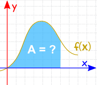 | |
|
The area can be found by adding slices that approach zero in width: And there are Rules of Integration that help us get the answer. |
 |
Notation
The symbol for "Integral" is a stylish "S" (for "Sum", the idea of summing slices):
And then finish with dx to mean the slices go in the x direction (and approach zero in width).
Definite Integral
A Definite Integral has start and end values: in other words there is an interval [a, b].
a and b (called limits, bounds or boundaries) are put at the bottom and top of the "S", like this:
| 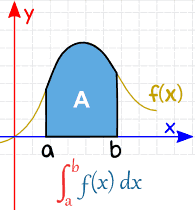 | 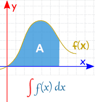 | |
| Definite Integral (from a to b) |
Indefinite Integral (no specific values) |
We find the Definite Integral by calculating the Indefinite Integral at a, and at b, then subtracting:
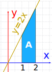
Example: What is
2
∫
1
2x dx
We are being asked for the Definite Integral, from 1 to 2, of 2x dx
First we need to find the Indefinite Integral.
Using the Rules of Integration we find that ∫2x dx = x2 + C
Now calculate that at 1, and 2:
- At x=1: ∫2x dx = 12 + C
- At x=2: ∫2x dx = 22 + C
Subtract:
And "C" gets cancelled out ... so with Definite Integrals we can ignore C.
Result:
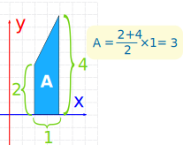
Check: with such a simple shape, let's also try calculating the area by geometry:
A = 2+42 × 1 = 3
Yes, it does have an area of 3.
(Yay!)
Notation: It is usual to show the indefinite integral (without the +C) inside square brackets, with the limits a and b after, like this:
Example (continued)
How to show your answer:
Let's try another example:
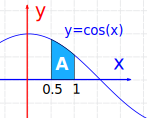
Example:
The Definite Integral, from 0.5 to 1.0, of cos(x) dx:
(Note: x must be in radians)
The Indefinite Integral is: ∫cos(x) dx = sin(x) + C
We can ignore C for definite integrals (as we saw above) and we get:
And another example to make an important point:
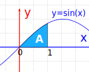
Example:
The Definite Integral, from 0 to 1, of sin(x) dx:
The Indefinite Integral is: ∫sin(x) dx = −cos(x) + C
Since we are going from 0, can we just calculate the integral at x=1 ??
−cos(1) = −0.540...
What? It is negative? But it looks positive in the graph.
Well ... we made a mistake!
Because we need to subtract the integral at x=0. We shouldn't assume it is zero.
So let us do it properly, subtracting one from the other:
That's better!
But we can have negative regions, when the curve is below the axis:

Example:
The Definite Integral, from 1 to 3, of cos(x) dx:
Notice that some of it is positive, and some negative.
The definite integral will work out the net value.
Let us do the calculations:
So there is more negative than positive with a net result of −0.700....
Try integrating cos(x) with different start and end values to see for yourself how positives and negatives work.
Positive Area
But sometimes we want all area treated as positive (without the part below the axis being subtracted).
In that case we must calculate the areas separately, like in this example:
Example: What is the total area between y = cos(x) and the x-axis, from x = 1 to x = 3?
This is like the example we just did, but now we expect that it is all positive (imagine we had to paint it).
So now we have to do the parts separately:
- One for the area above the x-axis
- One for the area below the x-axis
The curve crosses the x-axis at x = π/2 so we have:
From 1 to π/2:
From π/2 to 3:
That last one comes out negative, but we want it to be positive, so:
Total area = 0.158... + 0.859... = 1.017...
This is very different from the answer in the previous example.
Continuous
Oh yes, the function we are integrating must be Continuous between a and b: no holes, jumps or vertical asymptotes (where the function heads up/down towards infinity).
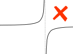
Example:
A vertical asymptote between a and b affects the definite integral.
Properties
Area above − area below
The integral adds the area above the axis but subtracts the area below, for a "net value":
Adding Functions
The integral of f+g equals the integral of f plus the integral of g:
Reversing the interval
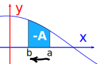
Reversing the direction of the interval gives the negative of the original direction.
Interval of zero length
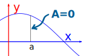
When the interval starts and ends at the same place, the result is zero:
Adding intervals
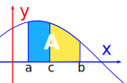
We can also add two adjacent intervals together:
Summary
The Definite Integral between a and b is the Indefinite Integral at b minus the Indefinite Integral at a.